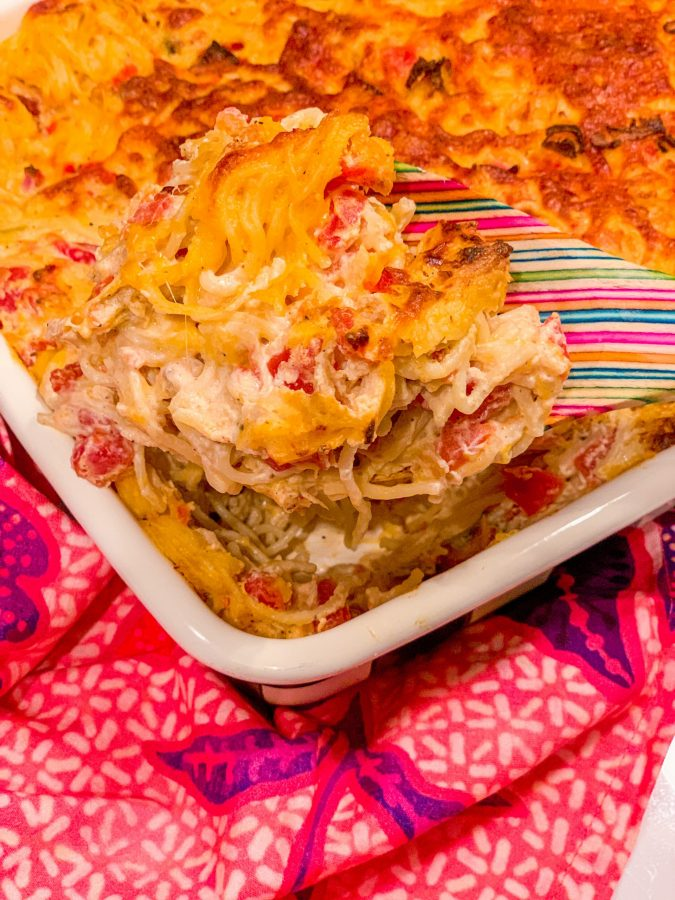

Southern Chicken Spaghetti

What is soul food Southern chicken spaghetti?
Unlike traditional spaghetti, Southern chicken spaghetti does not include ground beef or meatballs. Not even marinara sauce!
Succulent shredded chicken and spaghetti noodles are coated in a delicious mixture of cream cheese, sour cream, diced tomatoes, and cheddar cheese. It's then seasoned with onion, garlic, salt, and black pepper, to make a meal bursting with yummy flavors that you'll love!
Ingredients Needed
- 3 cups of cooked and seasoned shredded chicken
- 8 oz. of spaghetti noodles, uncooked
- 6 cups of water
- 1 tablespoon of butter
- ¼ cup of red onion, diced
- 20 oz. of Rotel tomatoes and chilies (two 10 oz. cans,I used mild!)
- 8 oz. of softened or whipped cream cheese
- 1 cup of sour cream
- ½ a teaspoon of garlic powder
- ½ a teaspoon of onion powder
- ½ a teaspoon of salt
- ¼ teaspoon of black pepper
- 2 cups of shredded cheddar cheese
- ½ a cup of shredded cheddar cheese
- 1 cup of fried onions
Instructions for Southern chicken spaghetti
- Once the chicken is made, shred or chop the cooked chicken into bite-size pieces.
- Heat the oven to 350 degrees F, grease a 9x13″ baking dish, and set it aside.
- Fill the Instant Pot stainless steel inner pot with water and add the butter.
- Break the uncooked spaghetti pasta in half and scatter the pasta evenly in the inner pot with the water.
- Close the Instant Pot lid (make sure the valve is up - in the position for sealing) and pressure cook on high for 2 minutes.
- When the cooking time is finished, allow a natural pressure release for 2 minutes.
- To open the Instant Pot lid, move the valve to 'venting' and manually release any remaining pressure, if applicable.
- When done, drain the spaghetti noodles in a colander and set them aside.
- Return the stainless steel inner pot to the Instant Pot and turn it on to the slow cook setting.
- Add the cooked chicken, red onion, Rotel tomatoes, cream cheese, sour cream, garlic powder, onion powder, salt, and pepper to the inner pot.
- Stir the ingredients together until the cream cheese is melted.
- Add the 2 cups of cheddar cheese and fried onions, then stir.
- Then fold the cooked spaghetti pasta into the mixture until the noodles are coated.
- Transfer the coated noodles into the prepared casserole dish.
- Sprinkle the top of the casserole with the remaining ½ a cup of cheddar cheese.
- Bake in the conventional oven for 10-15 minutes. In the Instant Pot Omni Plus oven for 8-10 minutes. Or until the cheese on top of the casserole is melted and golden brown.
- Serve folks Southern chicken spaghetti right away, and enjoy!